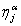
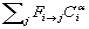
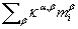
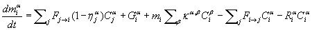

哪里
哪里

是路径中的过滤效率在 CONTAM 内，污染物可能会添加到 c.v. 中。 i by:
哪里

是路径中的过滤效率
可以从 c.v. 中删除一个物种。通过：

哪里
一种物质可以通过与其他物质的一级化学反应以以下速率添加或去除：

哪里 ka,b 是动力学反应系数，单位为 c.v. i 物种之间 a and b 。 （符号约定：正 k 对于生成和负 k 用于移除）。该线性表达式目前限制了可以建模的反应类型。将这些过程组合成一个方程，用于计算物种质量增加率 a 在简历中 i 给出：
|
 |
(6) |
控制体积中物种质量的瞬态守恒由下式给出：
( 污染物质量 a 在简历中 i 在某个时间 t+Dt ) =
( 质量污染物 a 在简历中 i 在某个时间 t) +
Dt × ( 污染物的增益率 a – 污染物损失率 a)
或者用方程形式表示为：

|
(7) |